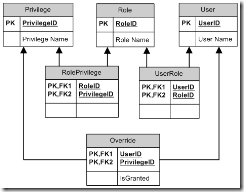
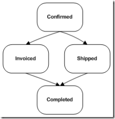
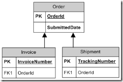
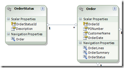
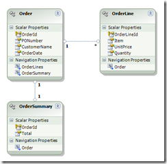

|
|
April 7th, 2009
I've started a new site specifically about Historic Modeling. The historic modeling content on AiS will remain here, but new content will be posted there. Adventures in Software will continue to be about lessons learned on the road to quality computing. Historic Modeling will be dedicated to the theory and practice of the technique, and the tools and processes I'm developing to support it.
The first series of posts is complete. It takes you step-by-step through the creation of a historic model. This example is drawn from real-life experience, and includes just enough complexity to demonstrate how the technique applies to real-world problems. Please enjoy.
Posted in Historic Modeling | 1 Comment »
April 3rd, 2009
It's a common refrain among the DBAs that I've worked with. We talk about a new feature, and they describe how it can be done in the database. They could write a stored procedure, a calculated column, a view, and a series of triggers to get exactly the behavior required. Their toolset is not limited to tables and indexes. They want to do more than just storage.
I respect that. I see what databases are capable of, and I want to take advantage of those capabilities where appropriate. On the other hand, I sympathize with arguments about separation of concerns. View logic is in the view, business logic is in the middle tier, and data access logic is in the database. Putting view logic or business logic into the data tier leads to trouble.
Calculating privileges
 The business has asked for a rich security model for our eCommerce system. They've identified several privileges that map to features of the site. They want an admin user to create roles containing those privileges. The admin user can then assign those roles to other users of the system.
Occasionally, there will be a one-off privilege that you want to explicitly grant or deny to a user. So after assigning a user some roles, the admin should be able to specify overrides. The ERD appears on the right.
The UI for managing roles and privileges is somewhat complex. The admin user searches for a user, and is presented with a list of roles. The admin clicks checkboxes next to the roles to assign them to the user.
Then the admin can navigate to another page where they are presented with a list of privileges. A green icon indicates default privileges -- the privileges that are part of a role to which the user is assigned. A checkbox indicates whether the user is granted that privilege. If there are no overrides, the green icons and the checkboxes agree. By checking and unchecking the privileges, the admin can create overrides.
In more formal notation, here is the dependent behavior that interprets the tables.
- user_in_role(User u, Role r) = there exists UserRole ur where ur.user = u and ur.role = r
- privilege_in_role(Privilege p, Role r) = there exists RolePrivilege rp where rp.privilege = p and rp.role = r
- is_default_privilege(User u, Privilege p) = there exists Role r such that user_in_role(u, r) and privilege_in_role(p, r)
- user_has_privilege(User u, Privilege p) =
there exists Override o such that o.user = u and o.privilege = p -> o.isGranted
else -> is_default_privilege(u, p)
The green icon reflects is_default_privilege, and the checkbox reflects user_has_privilege.
Calculating privileges in a view
The DBA, upon seeing these requirements, designed a view that calculates privileges for a user. Each row is a privilege. One bit column indicates whether the privilege is a default for the user, and another indicates whether the privilege is granted to the user. Looking at the formal notation, you can see that SQL is a natural language in which to describe this behavior.
But what happens when the user checks a checkbox? We want to either create or delete an Override. If the application code consumes the view, why should it need to also know about this logic?
The DBA also took care of this. He created an INSTEAD-OF UPDATE trigger on the view. When user_has_privilege is updated, an Override is either created or deleted. Now all of the logic for interpreting this table structure is encapsulated in a view. The view is the contract with the database.
Appropriate for our architecture?
This solution would be appropriate for a two-tier application. The page could bind directly to the view. But we have chosen a three-tier architecture. Between the page and the database is application logic. This approach is less desirable when a middle-tier is available.
The view combines all of the information into one result set, which takes away the ability for the application tier to cache privileges. Privileges do not change, unless we deploy a new version of the code. So caching them indefinitely is appropriate. The combined result set is bigger than the source data that could change, so it is less efficient.
The view is not a complete contract. The application still needs the ability to create and delete roles as individual entities. While this view encapsulates some of the business logic, it cannot encapsulate all of it. It is a leaky abstraction.
What is your opinion? Is this a data access contract? Is it business logic? Or is it perhaps UI logic? Which tier should handle this behavior?
Posted in Contracts, Databases | No Comments »
March 24th, 2009
One of the most talked about classes in WPF is ObservableCollection<T>. This is a collection class that notifies listeners whenever something is added or removed. Examples abound of using an ObservableCollection<Person> within the data model of an application. Add a person to the data model, and the view is updated.
But a problem with ObservableCollection<T> appears when you want to filter, map, or otherwise modify the collection on the way to the view. The desired way to accomplish this is to write a Linq query. But that turns the ObservableCollection<T> into an IEnumerable<T>. While the original source collection is observable, the query is not.
Filtered collections are not observable
In the following example, one list box is bound to People, while another is bound to PeopleStartingWithP. The first list is updated, but the second is not.
public class AddressBook
{
private ObservableCollection<Person> _people = new ObservableCollection<Person>();
public ObservableCollection<Person> People
{
get { return _people; }
}
public IEnumerable<Person> PeopleStartingWithP
{
get { return _people.Where(p => p.Name.StartsWith("P")); }
}
private Random _random = new Random();
public void NewPerson()
{
_people.Add(new Person() { Name = "Person " + _random.Next(100) });
}
}
<Window x:Class="AddressBook.Window1"
xmlns="http://schemas.microsoft.com/winfx/2006/xaml/presentation"
xmlns:x="http://schemas.microsoft.com/winfx/2006/xaml"
Title="Window1" Height="300" Width="300">
<StackPanel>
<ListBox ItemsSource="{Binding People}">
<ListBox.ItemTemplate>
<DataTemplate>
<TextBlock Text="{Binding Name}"/>
</DataTemplate>
</ListBox.ItemTemplate>
</ListBox>
<ListBox Name="FilteredList" ItemsSource="{Binding PeopleStartingWithP}">
<ListBox.ItemTemplate>
<DataTemplate>
<TextBlock Text="{Binding Name}"/>
</DataTemplate>
</ListBox.ItemTemplate>
</ListBox>
<Button Content="New Person" Click="NewPerson_Click"/>
</StackPanel>
</Window>
public partial class Window1 : Window
{
private AddressBook _addressBook = new AddressBook();
public Window1()
{
InitializeComponent();
DataContext = _addressBook;
}
private void NewPerson_Click(object sender, RoutedEventArgs e)
{
_addressBook.NewPerson();
}
}
One commonly used solution to this problem is to programmatically set either the DataContext or ItemsSource to force the list to be updated. This works, but it completely defeats the purpose of using ObservableCollection<T>.
private void NewPerson_Click(object sender, RoutedEventArgs e)
{
_addressBook.NewPerson();
FilteredList.ItemsSource = _addressBook.PeopleStartingWithP;
}
Writing code that reaches back into the XAML and sets properties is backwards. This is the way things were done in Winforms. XAML is meant to be declarative. The markup should declare its own ItemsSource, and not rely on code to set it.
Query parameters are not observable
Another problem with this approach occurs when the filter in the Linq query references other data. For example, if we want the user to choose their own first letter, the list should update when a new letter is chosen.
The following code makes this work by implementing INotifyPropertyChanged and firing an event when FirstLetter is changed.
private string _firstLetter = string.Empty;
public string FirstLetter
{
get { return _firstLetter; }
set { _firstLetter = value; FirePropertyChanged("PeopleStartingWithFirstLetter"); }
}
public IEnumerable<Person> PeopleStartingWithFirstLetter
{
get
{
if (_firstLetter == string.Empty)
return _people;
else
return _people.Where(p => p.Name.StartsWith(_firstLetter));
}
}
private void FirePropertyChanged(string propertyName)
{
if (PropertyChanged != null)
PropertyChanged(this, new PropertyChangedEventArgs(propertyName));
}
Do you see the problem? I've highlighted it for you. FirstLetter fires an event indicating that PeopleStartingWithFirstLetter has changed. That's not the property that was changed! That's the property that was affected by the change. FirstLetter is independent -- the user can change it. PeopleStartingWithFirstLetter is dependent -- it only responds to change. We've created a reverse dependency where FirstLetter knows about PeopleStartingWithFirstLetter. Again, this code is backwards.
Here's my solution
Update Controls makes data binding through linq queries a breeze. It doesn't require ObservableCollection<T>. It responds to changes to the source collection even if it is a plain-vanilla List<T>. And it even responds when the query parameters are changed. And it does all this without INotifyPropertyChanged or any backwards event registration code. Here's what the class looks like using Update Controls:
public class AddressBook
{
private List<Person> _people = new List<Person>();
private string _firstLetter = string.Empty;
private Independent _indPeople = new Independent();
private Independent _indFirstLetter = new Independent();
public IEnumerable<Person> People
{
get { _indPeople.OnGet(); return _people; }
}
public string FirstLetter
{
get { _indFirstLetter.OnGet(); return _firstLetter; }
set { _indFirstLetter.OnSet(); _firstLetter = value; }
}
public IEnumerable<Person> PeopleStartingWithFirstLetter
{
get
{
if (FirstLetter == string.Empty)
return People;
else
return People.Where(p => p.Name.StartsWith(FirstLetter));
}
}
private Random _random = new Random();
public void NewPerson()
{
_indPeople.OnSet();
_people.Add(new Person() { Name = "Person " + _random.Next(100) });
}
}
You just need those Independent sentry objects to ride along side your data. Tell them when the data is accessed and changed, and they will notify the controls.
For a more in-depth example, please see the latest video and download the source code.
Posted in Update Controls | No Comments »
March 19th, 2009
State transition diagrams have their place. They are useful for interpreting limited sets of well-defined inputs: for example parsing text, recognizing mouse gestures, or negotiating network protocols. But state or status in the large is rigid, hard to synchronize, and information poor. History is much more useful.
Business objects tend to accrete status fields. In our eCommerce system, for example, we have a status on a shopping cart, a status on an order, and a status on a line item. Each status means something different. The word "status" means nothing without knowing what statuses are available and when they change.
 Status can sometimes refer to several independent degrees of freedom simultaneously. An order can be invoiced, and it can be shipped. One does not necessarily happen before the other. In order to capture information accurately, we need a Cartesian product of statuses: neither invoiced nor shipped (confirmed), invoiced but not shipped (invoiced), shipped but not invoiced (shipped), and both invoiced and shipped (completed). Add a third degree of freedom, and the product explodes into an unmanageable mess.
Many status changes need to capture additional information. When an order is shipped, we need to store a tracking number. Since we have to capture this information anyway, we could just look at the tracking number field to see if it is populated, rather than checking the status. Keeping this information in two fields means that we have more degrees of freedom than the problem calls for, and therefore more validation and testing.
An alternative: historic modeling
Historic modeling is the practice of modeling object behavior based on its history, not its state. A historic modeling approach is to capture the historical events, and then determine the status. For example, invoicing an order is one event, and shipping is another. The status of the order is "confirmed" if neither of these events has been recorded, "completed" if both have, or "invoiced" or "shipped" if one exists but not the other.
Historical events carry information. The shipping event carries the tracking number, for example. This eliminates nullable fields by moving them away from the entity. And since the tracking number and shipped status cannot vary individually anymore, we have only the degrees of information that the problem demands.
The names of events tend to be much more informative than the word "status". Glancing at the data model, someone can see what events could happen with any given entity. If they only see the word "status", they don't have a clue.
Status is dependent upon history
 To model this system historically, we would create three tables: Order, Invoice, and Shipment. We allow only inserts into these tables. No updates. No deletes. (Yes, we allow data to be archived, but application logic never deletes information.)
We determine the status of an order based on predicates. The order is "submitted" if neither an Invoice nor a Shipment exists. It is "invoiced" if an Invoice exists but no Shipment. It is "Shipped" if a Shipment exists but no Invoice. And it is "completed" if both exist. This status can be encoded in a view for easy reporting.
Capturing this information historically, we can easily make sense of the model. It can only change in the ways we expect it to change. For example, in order to transition the order from "submitted" to "shipped", we have to enter a tracking number. The database can translate historic events into status. Status is dependent behavior, and history is independent.
Posted in Databases, Historic Modeling | No Comments »
March 16th, 2009
 I am tracking the status of an order in an eCommerce system. In the database, I have a table called OrderStatus that lists all of the statuses that an order can be in. Lookup table like this are useful for populating combo-boxes and running reports. And a foreign key constraint on the status column ensures the status of each order is within the set.
But within code, the lookup table is not necessary. I created an enumeration for the status values. The IDs were well-known. I didn't care about the descriptions.
I brought both the Order entity and the OrderStatus entity into the EDMX. The Order entity so I could create orders, and the OrderStatus entity to populate a combo-box. Since the Order table has a foreign key constraint relating it to OrderStatus, Entity Framework created a relationship. This caused problems.
When inserting an Order, I needed to set its status. So I created an OrderStatus and set its ID:
order.OrderStatus = new OrderStatus() { OrderStatusId = OrderStatusEnum.Submitted };
Entity Framework did not see this as setting the foreign key. Instead, it saw this as inserting both an Order and an OrderStatus. The result was a uniqueness constraint violation. The correct way to do this is to query for the existing order status, and then set the reference in the new order.
OrderContainer container = new OrderContainer();
order.OrderStatus =
container.OrderStatus
.Where(s => s.OrderStatusId == (byte)OrderStatusEnum.Submitted)
.First();
That just seems like too much work to set a foreign key in a row that I'm inserting. I decided instead to delete the relationship that EF had created between Order and OrderStatus. Upon doing so, I received this error validating the model.
Foreign key constraint 'FK_Order_OrderStatus' from table Orders (OrderStatusId) to table OrderStatus (OrderStatusId):: Insufficient mapping: Foreign key must be mapped to some AssociationSet on the conceptual side.
Entity Framework had pulled the foreign key constraint in from the database schema, and it needed to be mapped. I just deleted the association on the "conceptual side" (i.e. the EDMX designer surface) that represented that constraint.
Here's my solution
I actually have three. First, I could go back to my database and delete the foreign key constraint. This would make EF happy, but it would also remove the extra check on order status. It would take away some information that could be used by reporting tools. The foreign key constraint is the correct model, relationally, and I did not want to violate that model to satisfy EF. So I didn't do it.
Next, I could move OrderStatus to its own EDMX. I took this approach on other parts of the system that had several lookup tables, creating one single Lookup.EDMX file for all of them. This would prevent EF from importing the related tables in the same context, and would prevent it from creating the relationship. This seemed a bit much in this case, since I didn't have any other lookups, so I didn't do it.
Finally, I could remove the imported foreign key constraint. This requires hand-editing the XML, since the model browser doesn't allow you to delete any of the constraints that it has imported. To edit the XML, right-click on the EDMX file in solution explorer, select "Open With..." and then "XML Editor".
Find the AssociationSet element that refers to the foreign key that's giving you trouble. I deleted this chunk of XML:
<AssociationSet Name="FK_Order_OrderStatus" Association="Order.Store.FK_Order_OrderStatus">
<End Role="OrderStatus" EntitySet="OrderStatus" />
<End Role="Orders" EntitySet="Orders" />
</AssociationSet>
After cleaning that up, my EDMX validated again. Finally, to set the foreign key myself, I added a scalar property and mapped it to the column in the table.
This is another case of the tool trying too hard to help you out. It can't tell based on the relational model that this is a lookup table, and that it is not supposed to insert rows. Entity Framework tries very hard to keep you from managing foreign keys yourself. But the database is relational, and you do need to know about constraints and foreign keys. You have to be incredibly forceful to get the tool to move out of your way and let you see the model as it truly is.
Posted in Databases, Entity Framework | 4 Comments »
March 15th, 2009
A WPF or Silverlight ListBox can display anything. By default, it just displays the ToString() of the objects in the ItemsSource, but that can be adjusted. If you want to display a string other than the ToString(), you need to define an ItemTemplate:
<ListBox Height="200" ItemsSource="{Binding Posts}" SelectedItem="{Binding SelectedPost}">
<ListBox.ItemTemplate>
<DataTemplate>
<ListBoxItem Content="{Binding Title}"/>
</DataTemplate>
</ListBox.ItemTemplate>
</ListBox>
Unfortunately, when you do this the string eats your mouse clicks. You can click anywhere around the string, but clicking on the string does not select the item.
Here's my solution
Through trial and error (and MSDN) I finally found a solution:
<ListBox Height="200" ItemsSource="{Binding Posts}" SelectedItem="{Binding SelectedPost}">
<ListBox.ItemTemplate>
<DataTemplate>
<ListBoxItem IsHitTestVisible="False" Focusable="False" Content="{Binding Title}"/>
</DataTemplate>
</ListBox.ItemTemplate>
</ListBox>
If you set IsHitTestVisible and Focusable both to False on the ListBoxItem, then clicking the text selects the item, just like in the default ToString() scenario. Setting just one or the other does not change the behavior. Both must be changed.
This seems backwards to me. I would expect that you would have to set IsHitTestVisible to False on a TextBlock inside the ListBoxItem, not the ListBoxItem itself. Making the ListBoxItem invisible to hit tests seems like the opposite of what you want to do.
Nevertheless, this works, so I'll add those two attributes from now on. And BTW, my real XAML code uses Update Controls, but I thought I'd show you some Binding code just in case you haven't converted yet.
Update
Here's a simpler solution:
<ListBox Height="200" ItemsSource="{Binding Posts}" SelectedItem="{Binding SelectedPost}">
<ListBox.ItemTemplate>
<DataTemplate>
<TextBlock Text="{Binding Title}"/>
</DataTemplate>
</ListBox.ItemTemplate>
</ListBox>
It turns out that the content of a ListBox DataTemplate does not have to be a ListBoxItem. There's my old-school Win32 thinking kicking in. If you make it a TextBlock, then it responds correctly to mouse clicks.
Posted in User Interface | No Comments »
March 12th, 2009
Entity Framework does not understand the difference between independent and dependent data.
 We have in our schema a table containing orders, and another table containing order lines. We have a web page that shows a filtered list of orders. This page can be filtered and sorted according to several properties of the order, including total. Total is a dependent property, calculated from the order lines.
To accomplish this filtering and sorting in the database, we've created an order summary view. This view aggregates properties of an order that depend upon its lines. The order and order line tables represent independent data -- they can be changed -- while the order summary view represents dependent data -- its behavior depends upon other objects.
We've modeled this in Entity Framework in the picture to the right. An order has many order lines. An order is also associated with one order summary. We can write queries for orders based on properties of order summary. This works.
Insert fails
The problem happens when we insert an order. Because the order is in one-to-one association with an order summary, Entity Framework wants us to create an OrderSummary object at the same time.
Entities in 'OrderContainer.Order' participate in the 'OrderOrderSummary' relationship. 0 related 'OrderSummary' were found. 1 'OrderSummary' is expected.
Entity Framework does not understand that the OrderSummary view is dependent upon the Order table. When I insert into Order, the database calculates an OrderSummary. It thinks that OrderSummary is independent -- that I have to insert it myself.
Here's my bad solution
I changed multiplicity of the OrderSummary end from "One" to "Zero or One". This tells Entity Framework that the OrderSummary relationship is not required. Unfortunately, this is not the correct model. There always will be an order summary. If there is an order, the view will contain a row for it. One-to-one is not just a requirement, it is a promise. If the model only claims one-to-zero or one, then this promise is not expressed.
When making this change, the following error appeared briefly:
The multiplicity 'ZeroOrOne' on End 'OrderSummary' in the conceptual side Association 'Order.OrderOrderSummary' doesn't match with multiplicity 'One' on end 'OrderSummary' on the object side Association 'Order.OrderOrderSummary'.
I don't recall when it went away, but I went through a few gyrations of saving, closing, reopening, refreshing, and shaking the box. This particular relationship was not generated from the database. How could it have been, since views don't have foreign key constraints. There should be no "conceptual side" to get out of sync, but there must have been something in the EDMX that thought differently.
A better solution
I would prefer to tell EF that OrderSummary is dependent. It should know that I never have to insert it, update it, or delete it. Independent data can be changed. Dependent data cannot.
Since that is not possible, I am considering moving the dependent fields from OrderSummary into Order itself. I may do this with a multi-table mapping (actually, one table and one view). Or I may expose all of the Order columns in the OrderSummary view and just bind Order to this view.
Or I may skip the OrderSummary view altogether and see if I can express the total in linq. If linq can generate the appropriate aggregate, sort by it, and filter by it, then the view would not even be necessary. In this case, at least. We'll see.
Posted in Databases, Entity Framework | No Comments »
March 10th, 2009
Robert C. Martin's Design Principles and Design Patterns have shaped my career. His influential paper has been recently rediscovered, and given the moniker "The SOLID Principles". I'm excited to see the reach of his influence expanding, and happy to have a new group of people to discuss these principles with.
This week on the Alt.NET Podcast, Mike Moore talks with Scott Bellware on the state of Alt.NET. In this discussion, Bellware raises an interesting question. Why SOLID?
Of course, Scott and Mike both know the answer, and the question itself wasn't the point of the conversation. They were expressing concern that most of the people new to the SOLID principles can't articulate why SOLID is good.
While the new moniker gives us a name to invoke to begin a discussion, it unfortunately creates a barrier. Now that we have a mnemonic to help us remember the 5 principles, we can list them without reading the original paper. But that paper starts by answering the fundamental question, "Why?" Why does software go bad? Why does software rot?
I won't go through the reasons here. I cannot improve upon Uncle Bob's work. Instead, I encourage you to please click on the link above, print out the paper, and read it slowly. It may change your career, the same way it changed mine.
Posted in Patterns | 1 Comment »
March 5th, 2009
We're using Entity Framework for data access on an enterprise system. It has been painful, but we've gradually learned how to use the product. This last problem was our fault, but we blamed the tool.
The situation is that we have Orders with OrderLines. We want to find all orders that include a particular item. From those orders, we want to get information from a related entity called OrderSummary.
We tried several approaches until we found a syntax that would compile and give us the right set of orders. What we ended up with was a linq query using two "from" clauses:
OrderContainer container = new OrderContainer();
var source = container.Orders.Include("OrderSummary");
var orders =
from o in source
from ol in o.OrderLines
where ol.ItemId == "32180"
select o;
This query returns the correct set of orders, but the OrderSummary navigation property is not loaded. We called it a bug in EF and worked around it. The workaround involved multiple queries, and was generally a bad idea.
Fortunately, we took the time to revisit the problem. The first thing I did was to use Reflector to find out what that query was actually doing. Here's the equivalent:
var orders = source
.SelectMany(o => o.OrderLines, (o, ol) => new { order = o, orderLine = ol })
.Where(result => result.orderLine.ItemId == "32180")
.Select(result => result.order);
It's a round-about way of saying it, but it looks OK. It creates a tuple of orders and order lines, filters that tuple based on the item ID, then selects just the order part of the tuple. If you think about it relationally, this is pretty close to an old-fashioned WHERE join.
Keeping with the explicit syntax, I wrote the query exactly as I wanted it. This is the result:
var orders = source
.Where(o => o.OrderLines
.Any(ol => ol.ItemId == "32180"));
This reads like the specification. It gets all orders where any order line has the desired item ID.
This version of the code not only selects exactly the orders I want, it also includes the OrderSummary. No longer do I have to do additional queries to fill in the missing details.
Here's my solution
My advice after working through this problem is to skip the linq syntax. Get used to the more explicit extension method syntax. Understand .Where(), .Select(), and .Any(). When you are more explicit with your tools (and I'm not talking profanity here), you have a better chance of getting the behavior you want out of them.
Posted in C#, Entity Framework | No Comments »
March 4th, 2009
Watch a video on this topic, download the latest bits, and check out the source code.
WPF gives us an interface for separating commands from the visual elements that invoke them. The ICommand interface determines whether a command can be executed, and what happens when it is. To enable or disable a visual element bound to the command, the ICommand interface also exposes an event called CanExecuteChanged. Update Controls keeps track of changes and fires this event for you.
Why use command binding?
When I showed you the Presentation Model pattern, I used XAML events in code behind to handle button clicks. The problem with this approach is that it puts code in the view. This code doesn't operate on the view. In fact, it just delegates to a method on the presentation model. So why not just put it there?
Many people refer to the Presentation Model pattern as ViewModel (or Model-View-ViewModel for the palindromically inclined). That's because the ViewModel is a model designed specifically for the view. It expresses view-ish concerns, without actually being the view.
One of those concerns is the list of commands that the view can invoke. The view can bind those commands to buttons, menu items, or any other visual element. That's how you move your code from the view to the presentation model.
Create a command
WPF gives us a technique known as command binding. A command is an implementation of the ICommand interface. When it is bound to a visual element's Command property, the command controls when the visual element is enabled, and what it does when clicked.
In the latest build of Update Controls (version 2.0.3.1), I added support for command binding. It takes the form of a static class called MakeCommand. Its job is to make commands. The syntax for creating a simple command looks like this:
public ICommand AddPerson
{
get
{
return MakeCommand
.Do(() =>
{
Navigation.SelectedPerson = PersonList.NewPerson();
});
}
}
That funny arrow syntax is a lambda expression. This particular lambda expression takes no parameters, so there are empty parentheses on the left. This lambda executes a block of code, so there are curly braces on the right. This command will execute the code in those braces whenever the command is invoked, adding a person to the list and selecting them.
A slightly more complex command looks like this:
public ICommand DeletePerson
{
get
{
return MakeCommand
.When(() => Navigation.SelectedPerson != null)
.Do(() =>
{
PersonList.DeletePerson(Navigation.SelectedPerson);
});
}
}
Here we have two lambda expressions. The first tells us when the command can be executed, and the second tells us what it does. The When lambda returns a boolean. It says that this command is enabled only when the selected person is not null. The Do clause -- the one with the curly braces -- says that the selected person is deleted from the list when the command is invoked.
The advantage of using Update Controls for command binding is that it automatically keeps the view up-to-date as the When clause changes. Since the When clause above references the SelectedPerson property, it is reevaluated every time the selected person changes. There is no need to manually fire the CanExecuteChanged event that ICommand exposes.
Bind to the command
Now that the command is exposed as a property of the navigation model, it can be bound to elements in the view. Since the navigation model is already the DataContext of the view, it's just a matter of binding the Command property. For example:
<Button Content="Add" Command="{u:Update AddPerson}"/>
<Button Content="Delete" Command="{u:Update DeletePerson}"/>
This binds the Add and Delete buttons to the AddPerson and DeletePerson commands. The When clause of these commands controls whether the buttons are enabled, and the Do clause is executed when the button is clicked.
When not to move the code
There is a button on this view that opens a new window. I have not moved this code into the presentation model, because it is concerned specifically with view logic. It creates a new view, something that the presentation model is incapable of doing. The presentation model does not have any dependency upon the view; the dependency goes the other way.
For now, I've chosen to leave that code in the view. In the future, there may be a component concerned with the flow of user interaction among different views. If that architectural concern is added, then opening a new window would become a feature of that class. Until then, the feature is more appropriate on the view than on the presentation model.
Moving the code out of the view and into the presentation model keeps it closer to the objects it needs. WPF command binding gives us a way to do that. The Update Controls MakeCommand class easily creates commands that can be bound to. These commands automatically keep the view up to date when the visual elements should be enabled or disabled.
Posted in Update Controls | No Comments »
|

{kind=link}
{kind=link}
{kind=link}
{kind=link}
{kind=link}